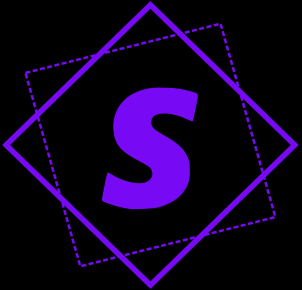

Peak ahh website
Seralyth Macro Vault
PEAK macro packages built for SERIOUS.. uhh.. cheaters???
Curated content
A clean macro interface for serious creators.
Faahhhh i aint explaining ts.. someone else do this before the big cool update :P
Total entries
{{ posts.length }}
Creators
{{ creatorCount }}
Built like a PEAK tool
This is meant to be absolutely amazing. Made for true modders.
PEAK folder packaging
Super easy, simply just drop it in! I ain't explaining this to a whole buncha randos.
PEAK workflow
The true workflow for creating and managing macros.
Request a Macro
Custom submissions
Open Form
Fetching database...
{{ post.title }}
@{{ post.author }}
{{ post.message }}
View